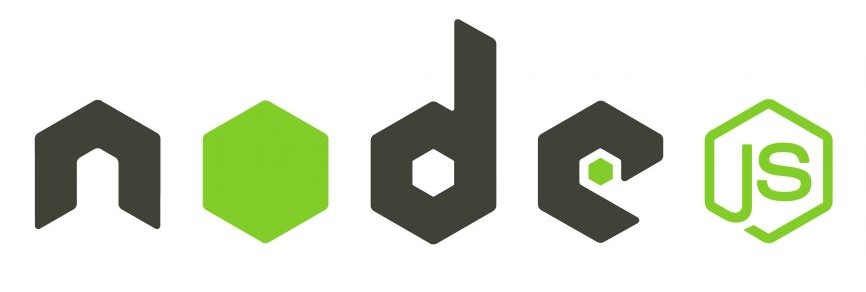
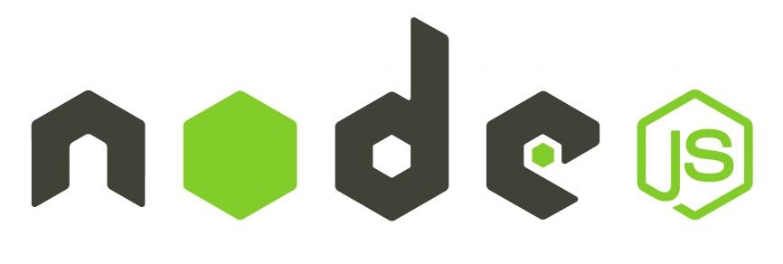

תיק עבודות
לורם איפסום או בקיצור ליפסום, הוא מלל מקובל וחסר משמעות המשמש “ממלא מקום” בעת עריכה, בתחום הדפוס, ההדפסה והפרסום. למשל: לורםלורם איפסום או בקיצור לי.

 

קצת עלי
לורם איפסום או בקיצור ליפסום, הוא מלל מקובל וחסר משמעות המשמש “ממלא מקום” בעת עריכה, בתחום הדפוס, ההדפסה והפרסום. למשל: לורםלורם איפסום או בקיצור ליפסום, הוא מלל מקובל וחסר משמעות . לורם איפסום או בקיצור ליפסוםהמשמש.לורם איפסום או בקיצור ליפסום, הוא מלל מקובל וחסר משמעות . משמש “ממלא מקום” בעת עריכה, בתחום הדפוס, ההדפסה והפרסום. למשל: לורםלורם איפסום או בקיצור ליפסום, הוא מלל מקובל וחסר משמעות . לורם איפסום או בקיצור ליפסוםהמשמש לורם איפסום או בקיצור ליפסום, הוא מלל מקובל.
להורדת קורות חייםעבודות נבחרות
לורם איפסום או בקיצור ליפסום, הוא מלל מקובל וחסר משמעות המשמש “ממלא מקום” בעת עריכה, בתחום.

פרויקט 1
לורם איפסום או בקיצור ליפסום, הוא מלל מקובל וחסר משמעות המשמש “ממלא מקום” בעת עריכה,
לעמוד הפרויקט
פרויקט 2
לורם איפסום או בקיצור ליפסום, הוא מלל מקובל וחסר משמעות המשמש “ממלא מקום” בעת עריכה,
לעמוד הפרויקט
פרויקט 3
לורם איפסום או בקיצור ליפסום, הוא מלל מקובל וחסר משמעות המשמש “ממלא מקום” בעת עריכה,
לעמוד הפרויקט
פרויקט 4
לורם איפסום או בקיצור ליפסום, הוא מלל מקובל וחסר משמעות המשמש “ממלא מקום” בעת עריכה,
לעמוד הפרויקט
פרויקט 5
לורם איפסום או בקיצור ליפסום, הוא מלל מקובל וחסר משמעות המשמש “ממלא מקום” בעת עריכה,
לעמוד הפרויקט
פרויקט 6
לורם איפסום או בקיצור ליפסום, הוא מלל מקובל וחסר משמעות המשמש “ממלא מקום” בעת עריכה,
לעמוד הפרויקטצור קשר
לורם איפסום או בקיצור ליפסום, הוא מלל מקובל וחסר משמעות המשמש “ממלא מקום” בעת עריכ.